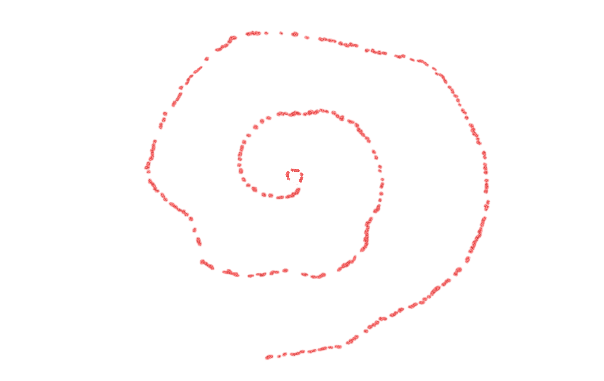
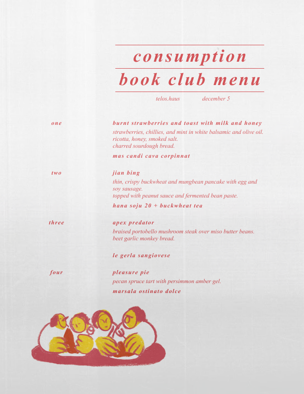

Consumption Book Club
next consumption book club: paradise rot by jenny hval



There is something eating at all of us. Whether it be our ideas, our obsessions, our cravings, our hunger—we are all looking to feed that which gives our life flavor. "Consumer culture" gives us quick-fixes that leave us always wanting more, but lack the staying power that comes from really connecting to that which we consume. We are overwhelmed with opportunities to spur our hunger, but what does it take to really be fed?
Consumption Book Club is a literary and culinary event series surrounding books that explores topics of "consumption"—what we consume, what we are consumed by, and what consumes us. We'll dig into these themes through guided discussions and embodied activities while working through a menu inspired by the books we read. Through these events, we hope to help shape counter-consumer-culture, where instead of feeling driven towards buying into short lived products and experiences in order to feel connected to each other, we intentionally spend our time and attention towards consuming that which actually feeds us: connecting with our community, expanding our thoughts, and doing both over delicious, thoughtful, and satiating meals.
A project by Colette Estelle and Kyle Barnes.
Photography by Eleanor Petry
Paradise Rot by Jenny Hval
February 15, 2026 at index
This session pairs a guided sourdough pretzel-making workshop with an open group discussion of Paradise Rot, Jenny Hval's twisted novella of intimacy and decomposition. Our theme is "Consumed by You," and we'll discuss the crushes that can consume us, the fine line between disgust and pleasure, the sickly sweet obsession that comes with the honeymoon phase, and how to nurture and mature those feelings instead of letting them go to rot.
Participants will…
Learn how to proof, shape, and bake your own sourdough pretzels (and take some home!)
Snack on a fermented spread of cheese, pickles, beer, and kombucha
Engage in guided discussion on Paradise Rot—no prior reading required
Receive a printed zine of recipes, writing, and artwork inspired by the themes.
Through these events, we help shape counter-consumer-culture, where instead of feeling driven towards buying into short lived products and experiences in order to feel connected to each other, we intentionally spend our time and attention towards consuming that which actually feeds us: connecting with our community, expanding our thoughts, and doing both over delicious, thoughtful, and satiating meals.

Land of Milk and Honey by C. Pam Zhang
December 5, 2025 at telos.haus

Land of Milk and Honey by C. Pam Zhang is a beautiful novel that explores the risks that come from "overconsumption." In a near-dystopian-future, pollution has covered most of the earth in a thick smog, leading to a world-wide famine due to a mass extinction among crops and animals. While most of society subsists on genetically modified mung-protein-flour that can keep them alive, the nameless chef narrator of this story hungers for more. She finds her way into an exclusive research facility on the top of a mountain in Italy, where the rich live above the fog and fund the scientists working to bring back extinct species in exchange for elaborate meals and the certainty of their futures. As the new head chef, our narrator explores her own relationship with pleasure, pain, indulgence, want, and hunger.